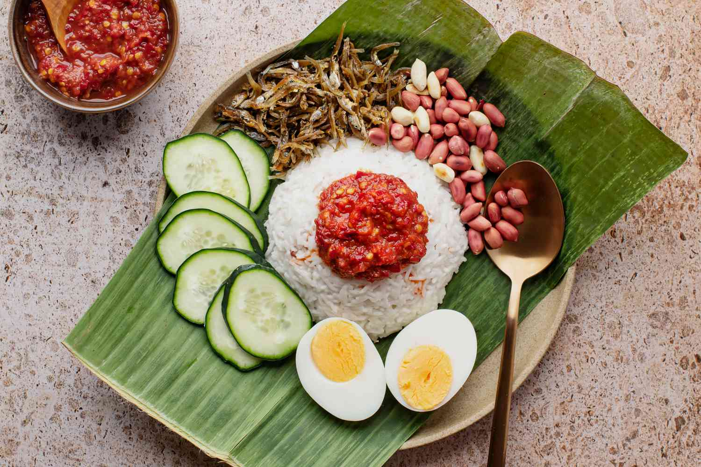
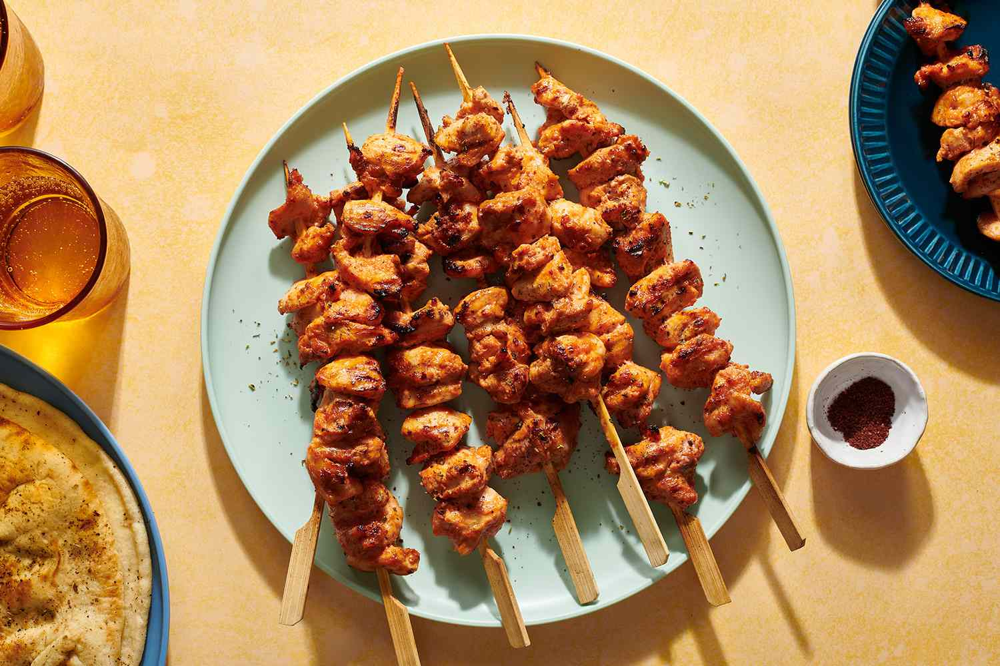
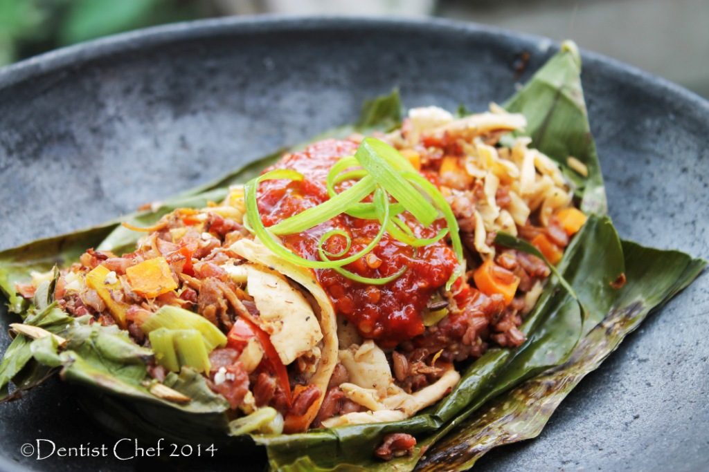

Ingredients :
- 2 cups basmati rice, or other long-grain rice
- 1 pandan leaf
- 1 stalk lemongrass, white portion only
- 1/2 leaf makrut lime leaf, optional
- 1 (13.5-ounce can) coconut milk
Directions :
- Rinse the rice and drain.
- Lightly pound the lemongrass stalk.
- Halfway through cooking, remove the lid and stir the rice briefly with a fork. Continue cooking until done.
- To serve, place a mound of coconut rice at the center of a plate. Top with a heaping tablespoon of sambal. Arrange the garnishes around the rice and serve.

Ingredients :
- 1 1/2 pounds boneless, skinless chicken breasts or thighs
- 1 large onion
- 2 cloves garlic
- 1/2 cup plain yogurt, or milk
- 1 teaspoon paprika
Directions :
- Cut the meat into 1-inch pieces. Set aside.
- Using the finest grater possible, grate the onion and garlic cloves over a medium bowl.
- Stir together the onion-garlic juice, yogurt, oil, tomato paste, black pepper, paprika, and salt.
- Cover the bowl and refrigerate it for at least 4 hours, preferably overnight for maximum flavor.
- Sprinkle the kebabs generously with salt and place on pre heated grill. Grill evenly on all sides, about 12 minutes total.
- Garnish with sumac, dried oregano, and paprika, if desired, and serve.

Ingredients :
- Red Rice 200gr
- 1 carrot
- 50 gr peas
- 1 bunch of red spinach
- 100 gr broccoli
Directions :
- Cook Red Rice
- Clean the vegetables then cut into pieces, set aside.
- Grind the shallots, garlic, Tropicana Slim Sambal Terasi, hazelnut spices. Then stir-fry with Tropicana Slim Extra Virgin Olive Oil until fragrant.
- Add a little water, add vegetables, and Tropicana Slim Soy Sauce. Sauté again until the vegetables are wilted and cooked.
- Take a banana leaf, arrange the shirataki rice then add the sautéed vegetables. Wrap and pin the ends with a stick or toothpick.
- Grill rice until fragrant. "Nasi Bakar Vegetarian" is ready to be served hot, more delicious.

Ingredients :
- Ham 500g
- Eggs 5
- Spinach
- Milk 120gr
- Hot Sauce
- Flour 360gr
- Cheese
Directions :
- Preheat the oven. Thaw and drain the spinach.
- Make your crust, then mix together the egg filling.
- Sprinkle the spinach, ham, cheese, and onion over the crust.
- Pour the egg filling over the top.
Bake the easy quiche at 375 degrees F for 40-50 minutes, until a knife comes out clean. Let rest for 5-10 minutes, then ENJOY!